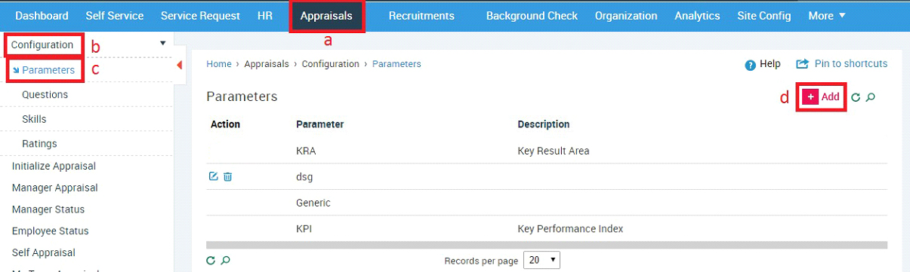
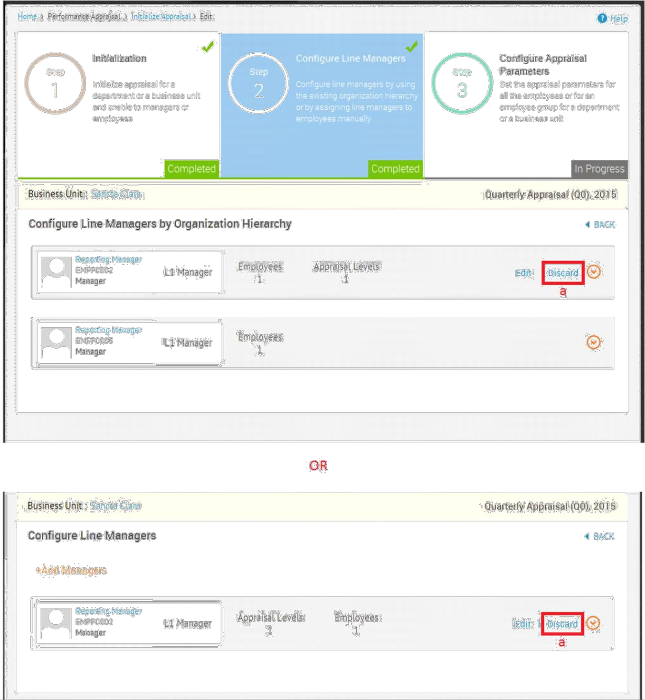

Appraisals
Performance Appraisal is a systematic evaluation of Employees’ performance and to understand their abilities for further career transition. It is generally done by the supervisors on the basis of factors such as parameters, questions, ratings etc. In Sentrifugo, the appraisal is configured for an entire business unit or for a specific department. Below is the flowchart of the appraisal process followed in Sentrifugo:
Process Description:
- A User (Management/HR for only specific department) initializes an appraisal
- The appraisal can be enabled to Managers/Employees
- If it is initialized to the Managers first, then they can assign questions in addition to the ones set by the User who initialized the appraisal.
- After the Managers submit their questions, the appraisal can be enabled to the Employees. (If you don’t require a Manager to provide additional questions, then you can directly enable the appraisal to the Employees)
- The eligible Employees will submit their self-appraisal and send it to their L1 Manager.
- L1 Managers will provide their comments and ratings for each question and overall comment and rating for the Employees.
- Depending on the number of appraisal levels selected, the L2/L3.. Managers can only provide overall rating and comment
- The User will close the appraisal cycle
- Management will initialize feedforward for Employees who have completed their appraisal or for all Employees
- Employees will provide feedback about their Managers
- Management will view the feedback and close the feedforward process
How do I add Parameters?
Parameters define the performance indicators defined by the supervisors to assess the capabilities of the Employees.

- Click Appraisals in the top menu
- Click Configuration on the left menu panel
- Click Parameters in the submenu
- Click +Add button on the right side
- Enter the parameter
- Provide Description
- Click SAVE button
How do I add Questions?
Questions are determined for each parameter defined in the parameters section. For each parameter, the supervisor can provide more than one question.

- Click Appraisals in the top menu
- Click Configuration on the left menu panel
- Click Questions in the submenu
- Click +Add button on the right side
- Select a parameter from dropdown
- Add other parameter
- Enter the question
- Provide description
- Click ADD NEW QUESTION to add a new question
- Click SAVE button
How do I add Skills?
Skills are the skill set that enhances the Employee’s profile.

- Click Appraisals in the top menu
- Click Configuration on the left menu panel
- Click Skills in the submenu
- Click +Add button on the right side
- Enter the skill
- Provide description if necessary
- Click SAVE button
How do I add Ratings?
You can add Ratings after completing the first step of Initialize Appraisal. This option is only for editing existing Ratings, provided Employees have not initiated the self-appraisal process
Ratings are defined for each business unit or department. The rating scales 1-5 and 1-10 are available in Sentrifugo.
- Click Appraisals in the top menu
- Click Configuration on the left menu panel
- Click Ratings in the submenu
- Click Edit icon on the right side
- Select a Business Unit from the dropdown list
- Select a Department from the dropdown list
- Provide rating text for each rating value
- Click UPDATE to save the ratings
After configuring the essential details, the next step is the initialization of the appraisal process.
How do I Initialize an Appraisal process?
- Click Appraisals in the top menu
- Click Initialize Appraisal on the left menu panel
- Click +Add button
Step 1: Initialization
- Enter the required details (Business Unit, Department, Year Range)
- There are 3 appraisal modes available: Quarterly (Q1, Q2, Q3, Q4), Half-Yearly (H1, H2), Yearly
- Period will be populated automatically depending on the appraisal mode you have selected
- Appraisal Status is by default ‘Open’ in Initialize appraisal
- Select an option in ‘Enable To’ dropdown. You can enable to Managers/Employees
- Based on the Enable To option, set a due date for the Employees/Managers to submit the appraisal details
- Select one or more eligibility criteria (Employees who are eligible for the appraisal process)
- Select parameter(s)
- Select a Ratings range (1-5 or 1-10)
- Click Update button to initialize appraisal for a Business Unit/Department
You will need to define the ratings before you proceed to Step 2.
- Click here to provide text to represent the rating numbers
Please refer section How do I add Ratings? to find out how to provide rating text.
Step 2: Configure Line Managers
Once the appraisal process is initiated for a Business Unit/Department, the Line Managers must be configured to evaluate the Employees’ appraisal.
The Line Managers can be configured in two ways:
- Establish appraisal process as per the organization hierarchy where the Line Managers will be the same as the Reporting Managers
- Define the number of appraisal levels and assign Line Managers to the Employees
- Save the configuration to apply to the selected department or business unit
- Click Choose by Organization Hierarchy button
A small confirmation window will appear.
- Click Yes Button
- Manager(s)’ names will be displayed
- Click here to view the Employees reporting to the displayed Managers
- The Employees reporting to the Manager will be displayed here
- Select the number of appraisal levels you want (We have selected ‘2’ in this example). You can have a maximum of 5 appraisal levels.
- Select your L1/L2… Manager(s)
- Click SAVE button

If you have only 1 appraisal level, then you don’t need to selectany appraisal level. Click SAVE button to proceed to the next step.
Assign Line Managers to Employees
- Define the number of appraisal levels
- Determine the Line Managers as per the selected appraisal levels
- Add or remove Employees based on the selected Line Managers
- Click Assign Line Managers to Employees
A small confirmation window will appear.
- Click Yes Button
- Click +Add Line Managers
- Select the number of appraisal levels
- Based on the number of appraisal levels, select the Line Managers
- Employees are displayed on the bottom left
- Click on the Employee(s) on the left side to select them for the appraisal process
- Click SAVE button.
Step 3: Configure Appraisal Parameters
Configure the appraisal parameters after configuring the Line Managers. Here, the appraisal process can be made applicable to all Employees of the Business Unit or Customized Employee Groups. This step can be done in two ways:
All Employees
- Questions created for the selected parameters in initialization step will be displayed
- Choose or add questions to be enabled to all Employees for the selected business unit or department
- Choose ratings and/or comments for each question by Line Manager and Employee
- Click All Employees
A small confirmation window will open
- Click Yes button
- Select Questions individually by checking the checkbox respective to each question
or
- Select all the questions by checking the Check All option in the table header
- Enable Manager/Employee Comments or Manager/Employee Ratings for a specific question. Enabling any option will allow Manager/Employee to provide Ratings and/or Comments.
or
- Enable Manager/Employee Comments or Manager/Employee Ratings for all questions. Enabling any option will allow Manager/Employee to provide Ratings and/or Comments.
- Click +Add New Question option to add more questions to the appraisal process
- Click SAVE & INITIALIZE button to initialize the appraisal
or
- Click SAVE & INITIALIZE LATER button to only save the appraisal details
Customized Employee Groups
- Apply appraisal parameters by grouping Employees
- Choose or add questions to be enabled to all Employees for the selected business unit or department
- Choose ratings and/or comments for each question by Line Manager and Employee
- Click on Customized Employee Groups
A small confirmation window will open
- Click Yes button
- Click CREATE NEW GROUP button
- Enter group name
- Select Employees applicable for the appraisal process
- Select questions individually
or
- Select all the questions by selecting Check All
- Enable Manager/Employee Comments or Manager/Employee Ratings for a specific question. Enabling any option will allow Manager/Employee to provide Ratings and/or Comments.
or
- Enable Manager/Employee Comments or Manager/Employee Ratings for all questions. Enabling any option will allow Manager/Employee to provide Ratings and/or Comments.
- Click +Add New Question option to add more questions to the appraisal process
- Click SAVE button
- Upon saving the appraisal parameters, click INITIALIZE button to initialize the appraisal process
- Click INITIALIZE LATER button to only save the appraisal process
- Click Yes button in the confirmation box to initialize the appraisal
How do I undo/discard Line Manager Configuration?
You can discard the Line Managers’ configuration after saving the appraisal process in Step 2.

- Click Discard option to remove the Line Manager configurations
How do I set additional appraisal questions as a Manager?
In the first step of Initialize appraisal, if the appraisal is enabled to the Managers, then Managers can set questions in addition to the ones initially added by the HR/Management. Once the parameters are set, Managers can create Employee groups and apply the appraisal parameters to the group.
- Login as a Manager
- Click Appraisals in the top menu
- Click Manager Appraisal on the left menu panel
- Click Edit icon against an appraisal process
- Create new group (E.g., Support, Testing, Development, etc.)
- Add Employees to the group by clicking on an Employee
- Click Add New Question option to add questions for a particular group of Employees
- Select Questions individually
or
- Select all the questions by selecting Check All
- Enable Manager/Employee Comments or Manager/Employee Ratings for a specific question. Enabling any option will allow Manager/Employee to provide Ratings and/or Comments.
or
- Select Enable Manager/Employee Comments or Manager/Employee Ratings for all questions. Enabling any option will allow Manager/Employee to provide Ratings and/or Comments.
- Click SAVE button
Upon saving appraisal details, the Manager must SUBMIT the appraisal process for initialization.
How do I enable the appraisal to Employees?
You can update the appraisal process by changing the process status from “Enable to Managers” to “Enable to Employees” and providing Employee Due Date.
- Click Appraisals in the top menu
- Click Initialize Appraisal on the left menu panel
- Click Edit icon against an appraisal process
- Select ‘Enable to Employees’ in the Enable To dropdown
- Select a date as the Employee Due Date
- Click UPDATE button to enable the appraisal process to Employees
How do I view a Manager’s Status?
You (Management/HR) can view the Manager’s appraisal status.
- Click Appraisals in the top menu
- Click Manager Status on the left menu panel
- Select the Business Unit
- Select the Department
- Select the Manager Appraisal Status if required
- Managers and their status will be displayed
How do I provide Self-Appraisal?
You can provide self-appraisal details such as ratings and comments. Upon completion of self-appraisal, your appraisal details will be visible to your line Managers for further ratings and comments.
- Click Appraisals in the top menu
- Click Self-Appraisal on the left menu panel
- The parameters are displayed above the questions grid
- Provide rating and comments for every question
- Click Rating Definition option to view the text for each rating
- Click SEND TO L1 MANAGER button to send the self-appraisal details it to L1 Manager
- Click SAVE AS DRAFT button to only save the appraisal process
How do I provide appraisal ratings and comments for an Employee?
You (L1 Manager) will be able to view your team Employees' appraisal status. Once the Employees complete their appraisal process, you will be able to provide ratings and comments to the Employees. Based on the levels of appraisal, the Employee appraisal process will be enabled to the Line Managers.
- Click Appraisals in the top menu
- Click My Team Appraisal on the left menu panel
- All the Employees in the Manager’s team will be displayed
- The status of each Employee’s appraisal is displayed
- Click Expand option to provide Manager’s rating
- Provide overall rating and comment for an Employee
- Provide the rating and comments for each question
- Click SUBMIT button
- Click SAVE AS DRAFT button to save the ratings and comments without submitting. This option will allow you to make changes to your ratings and comments later.
How do I check Employee Status?
You (Management/HR) can view the Employees’ appraisal status.
- Click Appraisals in the top menu
- Click Employee Status on the left menu panel
- Select the Business Unit
- Select the Department
- Select Appraisal Status if required
- Employees and their appraisal statuses will be displayed
What is Feedforward?
Feedforward is the feedback given by the Employees to appraise their respective Line Managers. All the configurations are done on the Management level. Only the Management can view the feedback given by the Employees about their Managers.
How do I add Questions for Feedforward?
Questions are added by the Management to evaluate Managers’ performance.
- Click Appraisals in the top menu
- Click Feedforward on the left menu panel
- Click Questions in the submenu
- Click +Add button
- Add the question and description if required
- Click ADD NEW QUESTION button to add more questions
- Click SAVE button
How do I initialize Feedforward
- In the initialize feed forward page, only the appraisals which have ‘Closed’ status are displayed.
- Employee Details: Here, the Management will determine if the management can view only the feedback given by the Employees or the feedback along with the Employee names
- Show: Employee names and their feedbacks will be displayed
- Hide: Only the feedback information will be displayed.
- Enable to: The Management will determine if all Employees can appraise their Managers or only the Employees eligible for appraisal
- Appraisal Employees: All the Employees eligible for appraisal process can appraise their Managers
- All Employees: All the Employees in the organization can appraise their Managers
- Due Date: The due date is for closing the Feed Forward process for Employees
- Configure Questions: All the questions added by the Management will be displayed. If more questions are to be added, Add New Question option is also provided
- Click Appraisals in the top menu
- Click Feedforward on the left menu panel
- Click Initialize Feedforward in the submenu
- Click +Add button
- Select an appraisal process from the Appraisal dropdown
- The Status will be to ‘Open’ by default
- Select whether you want to view the Employee details along with their feedback ratings and comments or have the Employee details hidden
- Enable Feedforward to all Employees or only to Employees who are eligible for Appraisal process
- Select a due date for Employees to provide their feedback
- Click Add New Question to add new questions for Feedforward
- Select Questions individually
or
- Select all the questions
- Select comments individually for all the questions
or
- Select comments for all questions
- Click SAVE & INITIALIZE button to initialize the Feed Forward process
- Click on SAVE & INITIALIZE LATER button to only save the Feed Forward process
How do I Appraise my Manager?
You will be able to view the questions defined to appraise your Line Managers. You can provide ratings and comments for each question and submit the feed forward.
- Click Appraisals in the top menu
- Click Feedforward on the left menu panel
- Click Appraise Your Manager in the submenu
- Provide ratings and comments
- Enter additional comments (not mandatory)
- Click SAVE AS DRAFT button to make changes later
- Click SUBMIT button
How do I view Managers’ Feedforward details?
You (Management) will be able to view Managers feedforward details. Upon selection of appraisal from the dropdown, feed forward details along with the Manager ratings are displayed. The average ratings of all the Employees will be highlighted. A detailed description of comments and ratings of Employees are displayed by question or by Employee.
- Click Appraisals in the top menu
- Click Feed forward on the left menu panel
- Click Manager Feed forward in the submenu
- Select an appraisal process to view the Feed forward details
- Click on individual Manager section to view the ratings and comments provided by Employees
The below options will only be available if you have selected ‘Show’ for the option Employee Details during feedforward initialization.
- Select ‘By Questions’ to view the ratings and comments based on questions
- Select ‘By Employee’ to view the ratings and comments of each Employee
How do I view Employee Feed forward Status?
You (Management) will be able to view the feed forward status of all Employees.
- Click Appraisals in the top menu
- Click Feedforward on the left menu panel
- Click Employee Status in the submenu
- Select a process to view Feedforward details in the dropdown
- The Employees of the selected process along with their Feed Forward status will be displayed
How do I view my Appraisal History?
- Click Appraisals in the top menu
- Click Appraisal History on the left menu panel
- Click My Appraisal History in the submenu
- Click on the record to view.
You can view your closed appraisal details here.
- Click Print button to print your appraisal details
How do I view my team’s Appraisal History?
- Click Appraisals in the top menu
- Click Appraisal History on the left menu panel
- Click Team Appraisal History in the submenu
- Click on the desired record to view.
- Click Expand for any employee to view more details
- Click Print to print your employee’s closed appraisal form